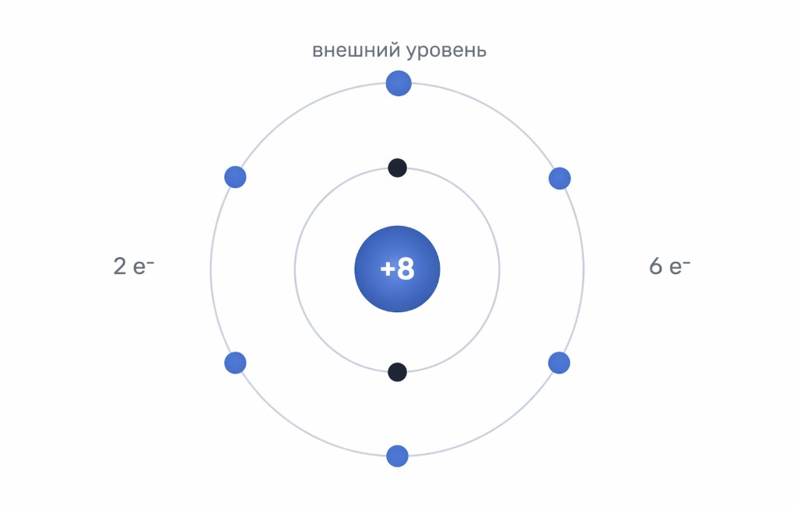

Фокус ОГЭ: строение атома в билете
Слоты 4–6 и связь с темой 01
Где это встречается
На странице предмета строка 02 считается по слотам 4, 5 и 6 части 1 — обычно это схема электронных слоёв, число протонов и электронов, период и группа по рисунку, иногда изотопы и запись AZX. Периодическая система — отдельно: тема 01, разминка по таблице (слоты 1–3). Разминка по этой теме в банке IQMO подбирает вопросы из номеров 2, 4, 5 и 6 части 1: к «атому» добавлен 2-й слот, потому что в вариантах рядом с темой часто идут смежные задания про электроны и схему (это не отменяет, что тема 01 на предмете — 1–3).
Если в формулировке задания…
| Формулировка / ситуация | Сначала проверьте |
|---|---|
| Схема: ядро +Z, слои с числами электронов | Число слоёв → период; сумма e⁻ на внешнем слое → группа (главная А) в типовых задачах. |
| «Число протонов / электронов / нейтронов» | Z = протоны = e⁻ в нейтральном атоме; A − Z = нейтроны (если дано A). |
| Ион Xn± | Протоны не меняются; электроны: катион − e⁻, анион + e⁻ относительно атома. |
| Электронная формула 1s²2s²2p⁴ | Сложите e⁻ на внешнем слое для связи с группой; сверьте с Z. |
1. Самое начало: что вообще такое атом
Без лишних терминов
Микроскопически маленькая «стройка»
Представьте шарик, который невозможно увидеть даже в школьный микроскоп. Это и есть атом — мельчайшая частица химического элемента, которая сохраняет его свойства.
Углерод в графите и алмазе — это всё ещё атомы углерода, просто «склеенные» по-разному. Если разбить атом углерода на части помельче — это уже не углерод в химическом смысле.
Две большие части: ядро и электроны
Ядро — тяжёлый центр, там почти вся масса. В ядре сидят протоны (заряд «плюс») и нейтроны (без электрического заряда — «нейтральные»).
Вокруг ядра на большом расстоянии (по меркам атома) летают электроны — лёгкие частицы с зарядом «минус». Их как раз рисуют «облаками» или электронными слоями в учебниках.
- Протон: заряд +1 (в условных единицах), масса ≈ 1 а.е.м.
- Нейтрон: заряд 0, масса ≈ 1 а.е.м.
- Электрон: заряд −1, масса почти нулевая по сравнению с протоном.
В нейтральном атоме число электронов равно числу протонов — плюсы и минусы балансируют, атом снаружи «не злой».
Заряд ядра = +Z · число электронов в атоме = Z2. Цифры, которые любит ОГЭ
Z, A и запись AZX
Порядковый номер Z
Z (порядковый номер) — это число протонов в ядре. Оно же, в нейтральном атоме, равно числу электронов.
В Периодической системе у каждого квадратика сверху как раз написан порядковый номер. Например, у кислорода Z = 8 → значит, 8 протонов и 8 электронов в нейтральном атоме.
Массовое число A и изотопы (коротко)
A — массовое число: протоны + нейтроны в ядре. Нейтроны «не меняют химию» элемента сильно, но меняют массу.
Атомы одного элемента с разным числом нейтронов называют изотопами. Для ОГЭ часто достаточно помнить: у водорода бывает протий, дейтерий, тритий — это изотопы водорода.
A = число протонов + число нейтронов3. Где «живут» электроны: слои и подуровни
То, что нужно, чтобы читать схемы
Электронный слой (энергетический уровень)
Слой номер n иногда называют просто «первый слой», «второй слой»… В ОГЭ это почти всегда совпадает с номером периода для элементов главных подгрупп, которые вам дают в задачах.
На одном слое может быть несколько «этажей» — это подуровни s, p, d, f. На ОГЭ в простых заданиях чаще всего показывают s и p на внешнем слое.
- Подуровень s — максимум 2 электрона.
- Подуровень p — максимум 6 электронов.
- Подуровень d — до 10 (у вас в задачах реже на схеме).
Как «заполняют» электроны (уровень ОГЭ)
Строгие правила (Паули, Гунт, Клечковский) вы выучите позже. Для экзамена важно другое:
- Сначала заполняют внутренние слои, потом внешние.
- На схеме из задания вам уже нарисовали результат — ваша задача прочитать, сколько электронов на каждом слое.
- Внешний слой — тот, что дальше от ядра и реально участвует в «общении» с другими атомами.
4. Как выглядит типичная схема в задании
Пример из банка IQMO
На рисунке обычно: кружок ядра с зарядом +Z, внутри подпись «протоны», рядом слои с числом электронов. Посчитайте сколько оболочек и сколько электронов на самой внешней.

Пример: ядро +8, два слоя, на внешнем 6 электронов → период 2, группа VI A → кислород.
5. Рецепт: период и группа по схеме
Делайте в том же порядке
Шаг 1. Считаем электронные слои
Сколько «колец» или строк в схеме — столько энергетических уровней. Это и есть номер периода (для типичных заданий ОГЭ).
Шаг 2. Смотрим внешний слой
Находим слой с наибольшим n (самый дальний от ядра). Складываем электроны на всех подуровнях этого слоя — это число валентных электронов в простых случаях.
Шаг 3. Группа (главная подгруппа A)
Для большинства элементов, которые вам дадут: номер группы = число электронов на внешнем слое. Исключения (гелий, переходные металлы) на ОГЭ обычно не подсовывают в таком же виде.
Римскую цифру VI в «VI группе» не пугайте: это просто «шестая».
Шаг 4. Проверка через Z
Если в ядре написан заряд +Z, он должен совпасть с порядковым номером найденного элемента. Если не сходится — пересчитайте слои.
6. Чуть глубже (по желанию)
Раскрывайте блоки, когда освоите основу
Ионы: почему у атома меняется число электронов
Атом может отдать электроны (катион, положительный ион) или принять (анион, отрицательный). Число протонов при этом не меняется — меняется только электронная оболочка.
Пример: Na → Na⁺ (отдал один электрон), Cl → Cl⁻ (принял один электрон).
Электронная конфигурация и «строчка» 1s²2s²2p⁴
Это компактная запись: число перед s/p — номер слоя, надстрочный индекс — сколько электронов на подуровне. Например, 2p⁴ значит «на втором слое на подуровне p четыре электрона».
Для ОГЭ часто достаточно уметь связать такую строку с числом внешних электронов и периодом.
Связь с темой 01 (таблица Менделеева)
Таблица упорядочивает элементы по возрастанию Z. Период говорит о слоях, группа (главная) — о внешних электронах. Поэтому темы 01 и 02 в экзамене почти всегда идут рядом.
Откройте интерактивную таблицу, кликните элемент и сравните «период» с числом слоёв на типовой схеме.
Подтемы · чеклист
Три нажатия по строке: не начато → в процессе → освоено
Прогресс хранится только в вашем браузере. Кнопка «к разделу» прокручивает к нужному блоку.
Закрепить «Строение атома»
5 вопросов из заданий, близких к теме (№2, 4, 5, 6 в номерации части 1). Можно проходить несколько раз — вопросы перемешиваются.